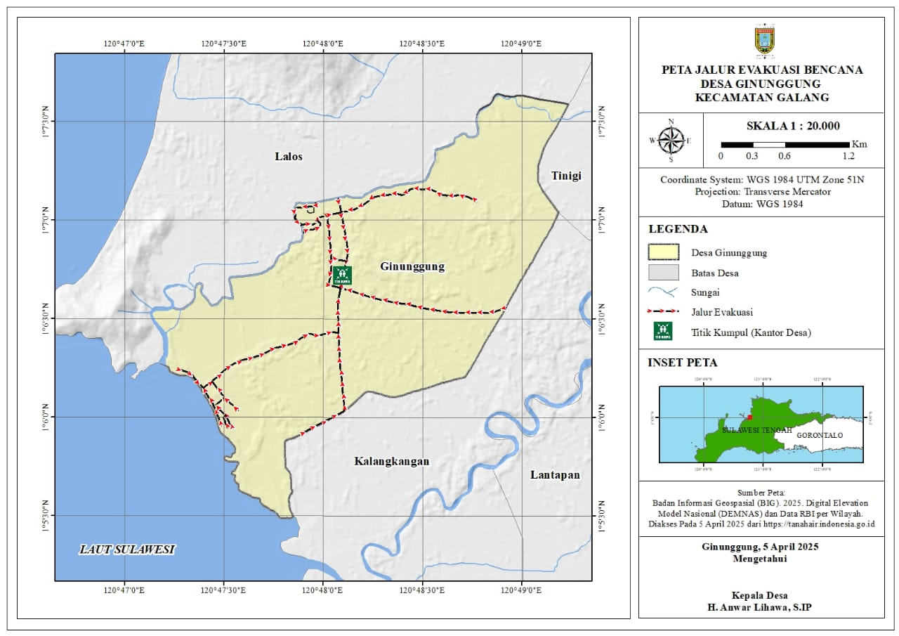
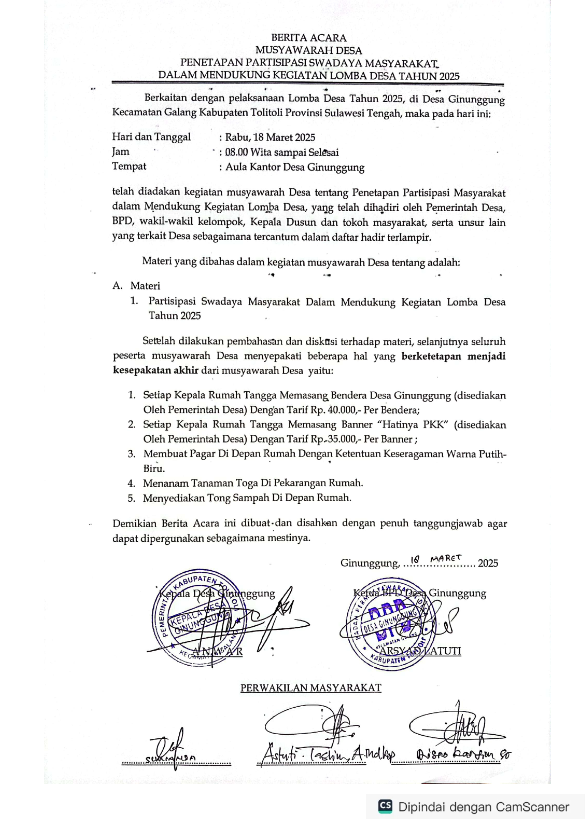
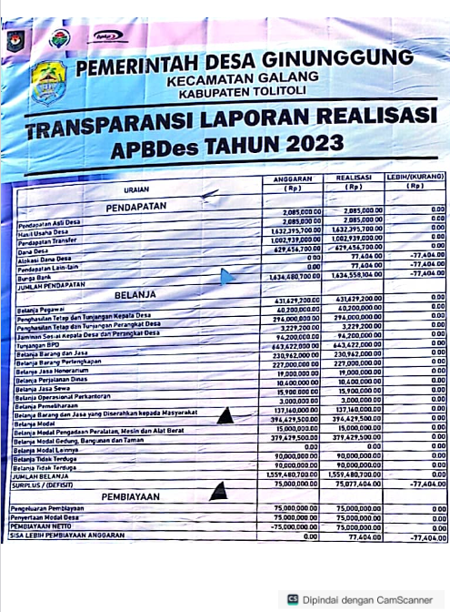

Pengumuman

Peta Jalur Evakuasi dan Titik Kumpul
Pemerintah Desa Ginunggung menyampaikan peta jalur evakuasi dan lokasi titik kumpul di Kantor Desa Ginunggung sebagai langkah mengurangi dampak bencana maupun korban jiwa jika terjadi bencana alam.
Unduh Peta
PENETAPAN PARTISIPASI SWADAYA MASYARAKAT
Pemerintah Desa Ginunggung menetapkan partisipasi swadaya masyarakat untuk mendukung pembangunan desa melalui kontribusi tenaga dan dana sesuai dengan program yang telah disepakati.
Unduh PDF
PENYAMPAIAN KEPADA MASYARAKAT
Pemerintah Desa Ginunggung menyampaikan informasi terkait kebijakan dan program pembangunan kepada masyarakat melalui pertemuan dan media resmi desa.
Unduh PDF
PERDES PENGENDALIAN GRATIFIKASI
Peraturan Desa (Perdes) ini mengatur pengendalian gratifikasi untuk memastikan tata kelola pemerintahan desa yang bersih dan transparan sesuai dengan regulasi yang berlaku.
Unduh PDF
MAKLUMAT PELAYANAN
Maklumat ini berisi informasi layanan publik yang disediakan oleh Desa Ginunggung, termasuk prosedur dan jadwal pelayanan untuk kemudahan masyarakat.
Unduh PDF
SURAT KETERANGAN DARI APH
Surat keterangan dari Aparat Penegak Hukum (APH) terkait status hukum desa atau warga yang dapat digunakan untuk keperluan administratif.
Unduh PDF
SURVEI KEPUASAN MASYARAKAT TERHADAP PELAYANAN PUBLIK DESA GINUNGGUNG
Hasil survei ini mencerminkan tingkat kepuasan masyarakat terhadap pelayanan publik di Desa Ginunggung, sebagai dasar evaluasi dan perbaikan layanan.
Unduh PDF